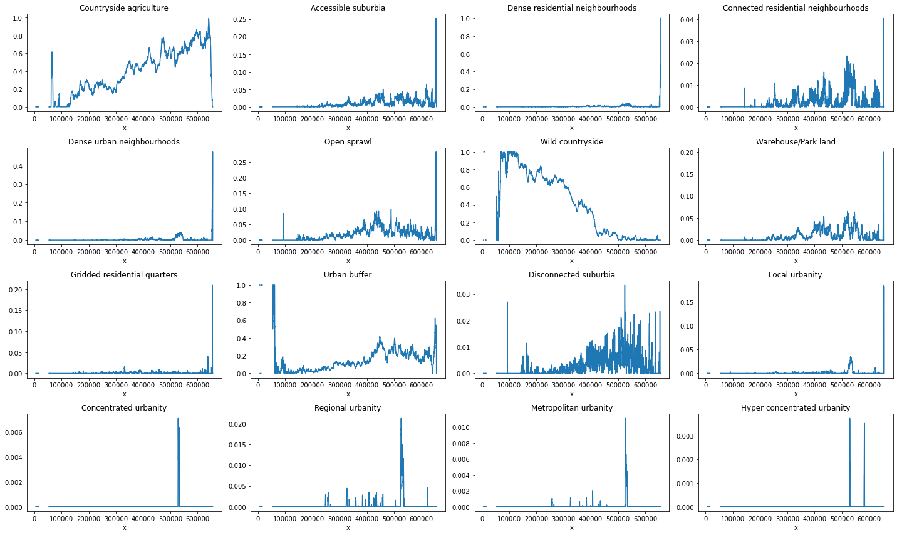
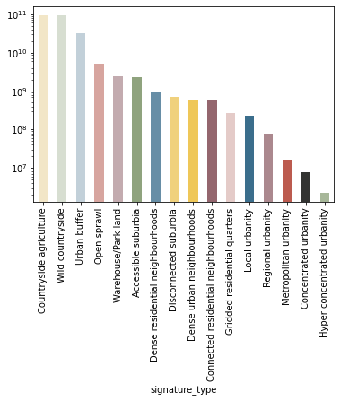
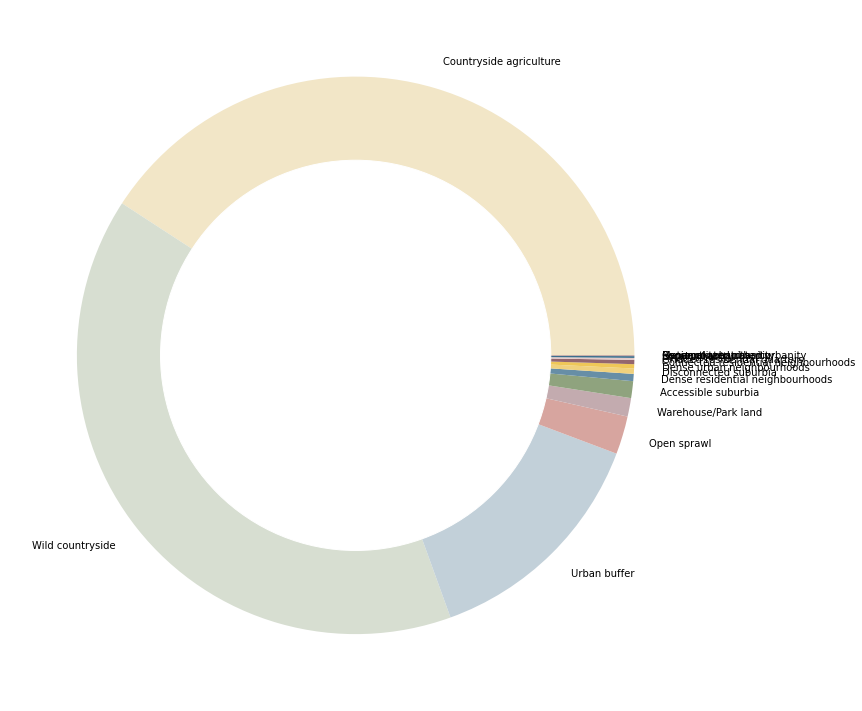

Geographical distribution and coverage of signature types¶
import xarray
import rioxarray
import numpy
import matplotlib.pyplot as plt
signatures = rioxarray.open_rasterio("../../urbangrammar_samba/spatial_signatures/signatures/signatures_raster.tif")
signatures
<xarray.DataArray (band: 1, y: 12150, x: 6505)>
array([[[nan, nan, ..., nan, nan],
[nan, nan, ..., nan, nan],
...,
[nan, nan, ..., nan, nan],
[nan, nan, ..., nan, nan]]])
Coordinates:
* band (band) int64 1
* y (y) float64 1.22e+06 1.22e+06 1.22e+06 ... 5.45e+03 5.35e+03
* x (x) float64 5.563e+03 5.663e+03 ... 6.559e+05 6.56e+05
spatial_ref int64 0
Attributes:
_FillValue: nan
scale_factor: 1.0
add_offset: 0.0
long_name: signature_type
grid_mapping: spatial_refxarray.DataArray
- band: 1
- y: 12150
- x: 6505
- nan nan nan nan nan nan nan nan ... nan nan nan nan nan nan nan nan
array([[[nan, nan, ..., nan, nan], [nan, nan, ..., nan, nan], ..., [nan, nan, ..., nan, nan], [nan, nan, ..., nan, nan]]]) - band(band)int641
array([1])
- y(y)float641.22e+06 1.22e+06 ... 5.35e+03
array([1220250., 1220150., 1220050., ..., 5550., 5450., 5350.])
- x(x)float645.563e+03 5.663e+03 ... 6.56e+05
array([ 5563., 5663., 5763., ..., 655763., 655863., 655963.])
- spatial_ref()int640
- crs_wkt :
- PROJCS["OSGB 1936 / British National Grid",GEOGCS["OSGB 1936",DATUM["OSGB_1936",SPHEROID["Airy 1830",6377563.396,299.3249646,AUTHORITY["EPSG","7001"]],AUTHORITY["EPSG","6277"]],PRIMEM["Greenwich",0,AUTHORITY["EPSG","8901"]],UNIT["degree",0.0174532925199433,AUTHORITY["EPSG","9122"]],AUTHORITY["EPSG","4277"]],PROJECTION["Transverse_Mercator"],PARAMETER["latitude_of_origin",49],PARAMETER["central_meridian",-2],PARAMETER["scale_factor",0.9996012717],PARAMETER["false_easting",400000],PARAMETER["false_northing",-100000],UNIT["metre",1,AUTHORITY["EPSG","9001"]],AXIS["Easting",EAST],AXIS["Northing",NORTH],AUTHORITY["EPSG","27700"]]
- semi_major_axis :
- 6377563.396
- semi_minor_axis :
- 6356256.909237285
- inverse_flattening :
- 299.3249646
- reference_ellipsoid_name :
- Airy 1830
- longitude_of_prime_meridian :
- 0.0
- prime_meridian_name :
- Greenwich
- geographic_crs_name :
- OSGB 1936
- horizontal_datum_name :
- OSGB 1936
- projected_crs_name :
- OSGB 1936 / British National Grid
- grid_mapping_name :
- transverse_mercator
- latitude_of_projection_origin :
- 49.0
- longitude_of_central_meridian :
- -2.0
- false_easting :
- 400000.0
- false_northing :
- -100000.0
- scale_factor_at_central_meridian :
- 0.9996012717
- spatial_ref :
- PROJCS["OSGB 1936 / British National Grid",GEOGCS["OSGB 1936",DATUM["OSGB_1936",SPHEROID["Airy 1830",6377563.396,299.3249646,AUTHORITY["EPSG","7001"]],AUTHORITY["EPSG","6277"]],PRIMEM["Greenwich",0,AUTHORITY["EPSG","8901"]],UNIT["degree",0.0174532925199433,AUTHORITY["EPSG","9122"]],AUTHORITY["EPSG","4277"]],PROJECTION["Transverse_Mercator"],PARAMETER["latitude_of_origin",49],PARAMETER["central_meridian",-2],PARAMETER["scale_factor",0.9996012717],PARAMETER["false_easting",400000],PARAMETER["false_northing",-100000],UNIT["metre",1,AUTHORITY["EPSG","9001"]],AXIS["Easting",EAST],AXIS["Northing",NORTH],AUTHORITY["EPSG","27700"]]
- GeoTransform :
- 5513.0 99.99999999999999 0.0 1220300.0 0.0 -99.99999999999999
array(0)
- _FillValue :
- nan
- scale_factor :
- 1.0
- add_offset :
- 0.0
- long_name :
- signature_type
- grid_mapping :
- spatial_ref
unique = numpy.unique(signatures[0])
unique = unique[~numpy.isnan(unique)]
unique
array([ 0., 10., 20., 21., 22., 30., 40., 50., 60., 70., 80., 90., 91.,
92., 93., 94., 95., 96., 97., 98.])
outliers = [93, 96, 97, 98]
unique = unique[~numpy.isin(unique, outliers)]
total_by_row = signatures[0].count("x")
total_by_col = signatures[0].count("y")
types = {
0: "Countryside agriculture",
10: "Accessible suburbia",
30: "Open sprawl",
40: "Wild countryside",
50: "Warehouse/Park land",
60: "Gridded residential quarters",
70: "Urban buffer",
80: "Disconnected suburbia",
20: "Dense residential neighbourhoods",
21: "Connected residential neighbourhoods",
22: "Dense urban neighbourhoods",
90: "Local urbanity",
91: "Concentrated urbanity",
92: "Regional urbanity",
94: "Metropolitan urbanity",
95: "Hyper concentrated urbanity",
}
proportion_by_lat = {}
proportion_by_lon = {}
for label in unique:
proportion_by_lat[types[label]] = ((signatures[0] == label).sum("x") / total_by_row)
proportion_by_lon[types[label]] = ((signatures[0] == label).sum("y") / total_by_col)
fig, axs = plt.subplots(4, 4, figsize=(20, 12))
for label, ax in zip(proportion_by_lat, axs.flatten()):
proportion_by_lat[label].plot(ax=ax)
ax.set_title(label)
plt.tight_layout()

fig, axs = plt.subplots(4, 4, figsize=(20, 12))
for label, ax in zip(proportion_by_lon, axs.flatten()):
proportion_by_lon[label].plot(ax=ax)
ax.set_title(label)
plt.tight_layout()

Coverage¶
import squarify
import geopandas
import urbangrammar_graphics as ugg
import matplotlib.pyplot as plt
signatures = geopandas.read_parquet("../../urbangrammar_samba/spatial_signatures/signatures/signatures_combined_levels_simplified.pq")
types = {
"0_0": "Countryside agriculture",
"1_0": "Accessible suburbia",
"3_0": "Open sprawl",
"4_0": "Wild countryside",
"5_0": "Warehouse/Park land",
"6_0": "Gridded residential quarters",
"7_0": "Urban buffer",
"8_0": "Disconnected suburbia",
"2_0": "Dense residential neighbourhoods",
"2_1": "Connected residential neighbourhoods",
"2_2": "Dense urban neighbourhoods",
"9_0": "Local urbanity",
"9_1": "Concentrated urbanity",
"9_2": "Regional urbanity",
"9_4": "Metropolitan urbanity",
"9_5": "Hyper concentrated urbanity",
}
signatures["signature_type"] = signatures["signature_type"].map(types)
signatures = signatures.dropna()
cmap = ugg.get_colormap(20, randomize=False)
cols = cmap.colors
symbology = {'0_0': cols[16],
'1_0': cols[15],
'3_0': cols[9],
'4_0': cols[12],
'5_0': cols[21],
'6_0': cols[8],
'7_0': cols[4],
'8_0': cols[18],
'2_0': cols[6],
'2_1': cols[23],
'2_2': cols[19],
'9_0': cols[7],
'9_1': cols[3],
'9_2': cols[22],
'9_4': cols[11],
'9_5': cols[14],
}
symbology = {types[k]:v for k, v in symbology.items()}
signatures["area"] = signatures.area
types_sum = signatures[["area", "signature_type"]].groupby("signature_type").sum()
types_sum
| area | |
|---|---|
| signature_type | |
| Accessible suburbia | 2.244586e+09 |
| Concentrated urbanity | 7.883216e+06 |
| Connected residential neighbourhoods | 5.654034e+08 |
| Countryside agriculture | 9.385615e+10 |
| Dense residential neighbourhoods | 9.572622e+08 |
| Dense urban neighbourhoods | 5.706291e+08 |
| Disconnected suburbia | 7.089617e+08 |
| Gridded residential quarters | 2.612541e+08 |
| Hyper concentrated urbanity | 2.293596e+06 |
| Local urbanity | 2.311573e+08 |
| Metropolitan urbanity | 1.658261e+07 |
| Open sprawl | 5.081598e+09 |
| Regional urbanity | 7.643967e+07 |
| Urban buffer | 3.158887e+10 |
| Warehouse/Park land | 2.462472e+09 |
| Wild countryside | 9.130631e+10 |
fig, ax = plt.subplots(figsize=(12, 12))
squarify.plot(sizes=types_sum.area, pad=False, ax=ax, color=list(symbology.values()))
ax.axis('off')
(0.0, 100.0, 0.0, 100.0)
types_sum["color"] = types_sum.index.map(symbology)
types_sum
| area | color | |
|---|---|---|
| signature_type | ||
| Accessible suburbia | 2.244586e+09 | (0.5625, 0.640625, 0.4921875) |
| Concentrated urbanity | 7.883216e+06 | (0.19921875, 0.203125, 0.1953125) |
| Connected residential neighbourhoods | 5.654034e+08 | (0.58203125, 0.3984375, 0.4296875) |
| Countryside agriculture | 9.385615e+10 | (0.9475259828670731, 0.9021947232500418, 0.782... |
| Dense residential neighbourhoods | 9.572622e+08 | (0.405436326872467, 0.5568241504426759, 0.6493... |
| Dense urban neighbourhoods | 5.706291e+08 | (0.9375, 0.78125, 0.34375) |
| Disconnected suburbia | 7.089617e+08 | (0.9408069995844273, 0.8211427621191237, 0.488... |
| Gridded residential quarters | 2.612541e+08 | (0.8956450438496885, 0.7949476416458632, 0.782... |
| Hyper concentrated urbanity | 2.293596e+06 | (0.6550082934095629, 0.716277287243688, 0.6001... |
| Local urbanity | 2.311573e+08 | (0.23046875, 0.4296875, 0.55078125) |
| Metropolitan urbanity | 1.658261e+07 | (0.73828125, 0.35546875, 0.30859375) |
| Open sprawl | 5.081598e+09 | (0.8429158144969133, 0.6476876988954169, 0.623... |
| Regional urbanity | 7.643967e+07 | (0.6718003015294096, 0.5329645862558573, 0.556... |
| Urban buffer | 3.158887e+10 | (0.7609260068673207, 0.8151335354690646, 0.849... |
| Warehouse/Park land | 2.462472e+09 | (0.7629942586386511, 0.6696270230872043, 0.685... |
| Wild countryside | 9.130631e+10 | (0.8429616514480401, 0.8699835216435621, 0.819... |
types_sum = types_sum.sort_values("area", ascending=False)
ax = types_sum.area.plot.bar(color=types_sum.color)
ax.set_yscale("log")

fig, ax = plt.subplots(figsize=(12, 12))
types_sum.area.plot.pie(colors=types_sum.color, labels=types_sum.index, ax=ax, normalize=True)
ax.axis("off")
ax.add_artist(plt.Circle((0,0), .7, color="w"))
